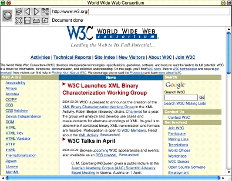

NetSurf is an open-source web browser for RISC OS. Its aim is to bring HTML 4 and CSS standards to the RISC OS platform.
NetSurf is currently under development. Test builds are available for download. The source code can be viewed through the CVS web interface, or follow the instructions to check it out.
This is a recent development screenshot:

Development is discussed on the netsurf-develop mailing list. Please post to the list if you are interested in contributing.
$Date: 2003/06/09 19:16:40 $